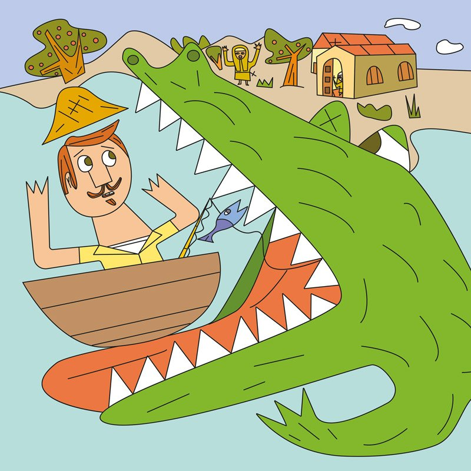

BICHOS GRANDES
Sobre jacarés, lendas e sobrenomes que dominam a planície goitacá desde 1989.

Na manhã de quinta-feira, 19 de novembro, um jacaré amanheceu morto na Rua Janot Pacheco, no Parque Jóquei Club, ao lado de uma lotérica. As fotos que começaram a circular cedo nos grupos de WhatsApp mostravam o animal estendido no asfalto, de barriga para baixo, com uma corda enrolada no pescoço. O portal J3News, que divulgou o caso, falou em sinais de possível violência.
Fazia três meses que o bairro convivia com ele, ou com um parente próximo. Em 19 de agosto, uma quarta-feira, um pedestre filmou um jacaré no valão do Parque Jóquei Club, perto do cruzamento da Rua Dr. Ricardo Quitete com a Avenida Winston Churchill. No vídeo, o animal se mexe rápido e assusta quem passa. O J3News procurou o Corpo de Bombeiros, que informou não ter sido acionado. Não houve resgate, captura ou remoção. Moradores contaram depois que ele aparecia sobretudo à noite e de madrugada, e havia quem temesse um acidente. O ponto onde o corpo foi localizado fica perto daquele canal, o que alimenta a suspeita de que seja o mesmo bicho. Até o fim da manhã desta quinta, não havia confirmação.
Jacaré em valão não é novidade em Campos. Em julho, a mesma equipe do J3News flagrou um filhote no Canal do Saco, no Parque Julião Nogueira. A planície é riscada por canais abertos no tempo em que se drenavam lagoas para plantar cana, e os bichos seguem usando, a seu modo, a rede hidráulica que os homens desenharam para outra finalidade. Novidade é a corda. Matar animal silvestre é crime ambiental desde 1998, pelo artigo 29 da Lei 9.605, com pena de seis meses a um ano de detenção e multa.
Todo campista conhece — ou deveria conhecer — a outra história, aquela em que o jacaré não morre. A lenda do Ururau da Lapa remonta ao século XVIII. Conta de um homem transformado num enorme jacaré-de-papo-amarelo, ururau em tupi, que passou a viver no fundo do Paraíba, em frente à Igreja da Lapa. Dali atacava as embarcações. Uma delas levava para a igreja um sino grande. O barco foi a pique, o sino afundou e, desde então, serve de abrigo ao bicho.
A lenda saiu da boca dos barqueiros e foi parar no cordel, no teatro, com o Auto do Ururau, e no Carnaval: em 1979 deu nome ao Grêmio Recreativo Escola de Samba Ururau da Lapa. Virou também objeto de pesquisa. Professores que levaram a história para as salas de aula do Liceu de Humanidades e de escolas municipais quiseram saber o que os alunos tiram dela, e os trabalhos acadêmicos falam no seu conteúdo moralizador.
O detalhe mais curioso da lenda costuma passar despercebido. O Ururau não destrói o sino, mas, assim como o Chaves e o seu barril, faz do sino sua morada. O objeto que deveria chamar os fiéis e marcar as horas da cidade vai para o fundo do rio e vira a casa de um homem que deixou de ser homem.
Há 37 anos a política de Campos gira em torno de um sobrenome. Anthony Garotinho foi prefeito de 1989 a 1992 e de 1997 a 1998, governou o estado de 1999 a 2002 e entregou o Palácio Guanabara à mulher, Rosinha. O filho, Wladimir, assumiu a prefeitura em 1º de janeiro de 2021 e foi reeleito no primeiro turno em 2024.
Em 2 de abril passado, quinta-feira, Wladimir subiu ao palco do Teatro Trianon para entregar o cargo ao seu vice, o empresário Frederico Paes (MDB), e se lançar candidato a deputado federal, agora pelo PL. Semanas depois, num evento em que o pai lançava a pré-candidatura ao governo do estado, Garotinho apontou para o novo prefeito: “Fred vai ser um grande prefeito para nossa cidade.”
Em 4 de outubro, Wladimir teve 81.797 votos no estado. A delegada Madeleine e Caio Vianna (PDT), filho do ex-prefeito Arnaldo Vianna, falecido em janeiro deste ano, aos 78 anos, disputavam a mesma cadeira e somaram juntos 39.867.
O pai teve menos sorte. Anthony Garotinho, então no Republicanos, disputou o governo com o registro indeferido pelo TRE-RJ com base na Lei da Ficha Limpa. Antes, o TSE mantivera contra ele uma condenação de 13 anos e 9 meses de prisão por corrupção eleitoral, associação criminosa, supressão de documento e coação de testemunhas, crimes cometidos na eleição municipal de 2016, em Campos. Nas urnas, recebeu 274.411 votos. Na segunda-feira seguinte, pediu para desistir do recurso. O TSE não aceitou a desistência, mas manteve o indeferimento de sua candidatura e anulou os 274.411 votos (3,17%) recebidos por ele no pleito. Na retotalização, Douglas Ruas (PL) chegou a 50,88% dos válidos e ganhou no primeiro turno, sem precisar enfrentar Eduardo Paes no segundo. O resultado foi proclamado em 15 de outubro. Ruas é do partido para o qual Wladimir havia se mudado meses antes.
Os 274.411 votos continuam registrados. Não servem para nada.
No valão da Winston Churchill, o jacaré do Jóquei passou três meses sem que ninguém chamasse os bombeiros. Era visto, filmado, comentado e deixado onde estava, como tantos bichos grandes da planície. Em Campos eles raramente somem. Afundam, trocam de canal, de cargo, de legenda, e reaparecem adiante.
O cidadão médio é cruel com o bicho, mas depende do bicho.
O de agora não teve sino para se esconder. Foi encontrado com uma corda no pescoço, estendido na calçada da Rua Janot Pacheco, ao lado da lotérica onde, toda semana, alguém aposta que desta vez o resultado vai ser outro.